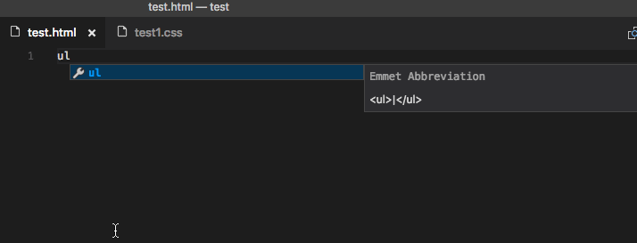
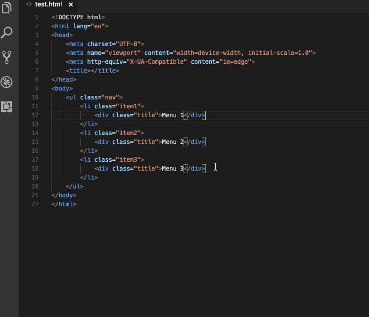

Visual Studio Code 中的 Emmet
对 Emmet 代码片段和展开的支持内置于 Visual Studio Code 中，无需安装扩展。Emmet 2.0 支持大多数 Emmet 操作，包括展开 Emmet 缩写和代码片段。
如何展开 Emmet 缩写和代码片段
Emmet 缩写和代码片段展开默认在 html、haml、pug、slim、jsx、xml、xsl、css、scss、sass、less 和 stylus 文件中启用，以及任何继承自上述语言的语言，如 handlebars 和 php。

当你开始输入 Emmet 缩写时，你会在建议列表中看到该缩写。如果你打开了建议文档弹出窗口，你会在输入时看到展开结果的预览。如果你在样式表文件中，展开后的缩写会显示在建议列表中，与其他 CSS 建议一起排序。
使用 Tab 键展开 Emmet
如果你想使用 kbstyle(Tab) 键来展开 Emmet 缩写，请添加以下设置：
"emmet.triggerExpansionOnTab": true此设置允许在文本不是 Emmet 缩写时使用 kbstyle(Tab) 键进行缩进。
禁用 quickSuggestions 时的 Emmet
如果你已禁用 setting(editor.quickSuggestions) 设置，你在输入时将看不到建议。你仍然可以通过按 kb(editor.action.triggerSuggest) 手动触发建议并查看预览。
在建议中禁用 Emmet
如果你完全不想在建议中看到 Emmet 缩写，请使用以下设置：
"emmet.showExpandedAbbreviation": "never"你仍然可以使用命令 Emmet: 展开缩写 来展开缩写。你也可以将任何键盘快捷键绑定到命令 ID editor.emmet.action.expandAbbreviation。
Emmet 建议排序
要确保 Emmet 建议始终显示在建议列表的顶部，请添加以下设置：
"emmet.showSuggestionsAsSnippets": true,
"editor.snippetSuggestions": "top"在其他文件类型中使用 Emmet 缩写
要在默认不支持的的文件类型中启用 Emmet 缩写展开，请使用 setting(emmet.includeLanguages) 设置。确保映射的两边都使用 语言标识符，右边是 Emmet 支持的语言标识符（参见上面的列表）。
例如：
"emmet.includeLanguages": {
"javascript": "javascriptreact",
"razor": "html",
"plaintext": "pug"
}Emmet 不了解这些新语言，因此可能会出现非 HTML/CSS 上下文中的 Emmet 建议。为避免此情况，你可以使用以下设置。
"emmet.showExpandedAbbreviation": "inMarkupAndStylesheetFilesOnly"注意： 如果你之前使用setting(emmet.syntaxProfiles)来映射新的文件类型，从 VS Code 1.15 开始，你应该改用setting(emmet.includeLanguages)设置。setting(emmet.syntaxProfiles)仅用于 自定义最终输出。
使用多光标时的 Emmet
你可以在多光标时使用大多数 Emmet 操作：

使用过滤器
过滤器是特殊的后处理器，在展开的缩写输出到编辑器之前对其进行修改。有两种使用过滤器的方式：要么通过 setting(emmet.syntaxProfiles) 设置进行全局设置，要么直接在当前缩写中使用。
以下是第一种方法的示例，使用 setting(emmet.syntaxProfiles) 设置为 HTML 文件中的所有缩写应用 bem 过滤器：
"emmet.syntaxProfiles": {
"html": {
"filters": "bem"
}
}
要仅为当前缩写提供过滤器，请将过滤器追加到缩写后面。例如，div#page|c 将对 div#page 缩写应用 comment 过滤器。
BEM 过滤器 (bem)
如果你使用 块元素修饰符（BEM）方式编写 HTML，那么 bem 过滤器对你来说非常方便。要了解有关如何使用 bem 过滤器的更多信息，请阅读 Emmet 中的 BEM 过滤器。
你可以使用 bem.elementSeparator 和 bem.modifierSeparator 首选项（如 Emmet 首选项 文档中所述）来自定义此过滤器。
注释过滤器 (c)
此过滤器在重要标签周围添加注释。默认情况下，"重要标签"是指具有 id 和/或 class 属性的标签。
例如 div>div#page>p.title+p|c 将展开为：
<div>
<div id="page">
<p class="title"></p>
<!-- /.title -->
<p></p>
</div>
<!-- /#page -->
</div>你可以使用 filter.commentTrigger、filter.commentAfter 和 filter.commentBefore 首选项（如 Emmet 首选项 文档中所述）来自定义此过滤器。
filter.commentAfter 首选项的格式在 VS Code Emmet 2.0 中有所不同。
例如，不要使用：
"emmet.preferences": {
"filter.commentAfter": "\n<!-- /<%= attr('id', '#') %><%= attr('class', '.') %> -->"
}在 VS Code 中，你可以使用更简单的格式：
"emmet.preferences": {
"filter.commentAfter": "\n<!-- /[#ID][.CLASS] -->"
}修剪过滤器 (t)
此过滤器仅在为 Emmet: 使用缩写包裹 命令提供缩写时适用。它从包裹的行中 删除行标记。
使用自定义 Emmet 代码片段
自定义 Emmet 代码片段需要定义在名为 snippets.json 的 JSON 文件中。setting(emmet.extensionsPath) 设置应该包含该文件所在目录的路径。
以下是此 snippets.json 文件内容的示例。
{
"html": {
"snippets": {
"ull": "ul>li[id=${1} class=${2}]*2{ Will work with html, pug, haml and slim }",
"oll": "<ol><li id=${1} class=${2}> Will only work in html </ol>",
"ran": "{ Wrap plain text in curly braces }"
}
},
"css": {
"snippets": {
"cb": "color: black",
"bsd": "border: 1px solid ${1:red}",
"ls": "list-style: ${1}"
}
}
}在 Emmet 2.0 中通过 snippets.json 文件编写自定义代码片段与旧方式在以下几个方面有所不同：
主题 | 旧 Emmet | Emmet 2.0
------ | -------- | ---------
代码片段与缩写 | 在两个独立的属性 snippets 和 abbreviations 中同时支持 | 两者已合并为一个名为 snippets 的属性。参见默认 HTML 代码片段 和 CSS 代码片段
CSS 代码片段名称 | 可以包含 : | 定义代码片段名称时不要使用 :。当 Emmet 尝试将给定的缩写模糊匹配到某个代码片段时，它用于分隔属性名和属性值。
CSS 代码片段值 | 可以以 ; 结尾 | 不要在代码片段值的末尾添加 ;。Emmet 会根据文件类型（css/less/scss vs sass/stylus）或为 css.propertyEnd、sass.propertyEnd、stylus.propertyEnd 设置的 emmet 首选项来添加末尾的 ;
光标位置 | 可以使用 ${cursor} 或 \| | 仅使用 Textmate 语法，如 ${1} 用于制表位和光标位置
HTML Emmet 代码片段
HTML 自定义代码片段适用于所有其他标记风格，如 haml 或 pug。当代码片段值是缩写而不是实际的 HTML 时，可以根据语言类型应用适当的转换以获得正确的输出。
例如，对于一个包含列表项的无序列表，如果你的代码片段值是 ul>li，你可以在 html、haml、pug 或 slim 中使用相同的代码片段，但如果你的代码片段值是 html 文件中使用。
如果你想要一个纯文本的代码片段，请用 {} 将文本括起来。
CSS Emmet 代码片段
CSS Emmet 代码片段的值应该是一个完整的属性名和属性值对。
CSS 自定义代码片段适用于所有其他样式表风格，如 scss、less 或 sass。因此，不要在代码片段值的末尾包含 ;。Emmet 会根据语言是否需要它来添加。
不要在代码片段名称中使用 :。当 Emmet 尝试将缩写模糊匹配到某个代码片段时，: 用于分隔属性名和属性值。
自定义代码片段中的制表位和光标
自定义 Emmet 代码片段中的制表位语法遵循 Textmate 代码片段语法。
- 使用
${1}、${2}表示制表位，使用${1:placeholder}表示带占位符的制表位。 - 以前，
|或${cursor}用于在自定义 Emmet 代码片段中表示光标位置。这已不再受支持。请改用${1}。Emmet 配置
以下是你可以用来在 VS Code 中自定义 Emmet 体验的 Emmet 设置。
setting(emmet.includeLanguages)
使用此设置在所选择的语言与某个 Emmet 支持的语言之间添加映射，以便在前者中启用 Emmet 并使用后者的语法。确保映射的两边都使用语言 ID。
例如：
"emmet.includeLanguages": {
"javascript": "javascriptreact",
"plaintext": "pug"
}setting(emmet.excludeLanguages)
如果某种语言你不想看到 Emmet 展开，请将其添加到此设置中，该设置接受语言 ID 字符串的数组。
setting(emmet.syntaxProfiles)
参见 Emmet 输出配置文件自定义 以了解如何自定义 HTML 缩写的输出。
例如：
"emmet.syntaxProfiles": {
"html": {
"attr_quotes": "single"
},
"jsx": {
"self_closing_tag": true
}
}setting(emmet.variables)
自定义 Emmet 代码片段使用的变量。
例如：
"emmet.variables": {
"lang": "de",
"charset": "UTF-16"
}setting(emmet.showExpandedAbbreviation)
控制在建议/补全列表中显示的 Emmet 建议。
设置值 | 描述
----------- | -------
never | 永远不在任何语言的建议列表中显示 Emmet 缩写。
inMarkupAndStylesheetFilesOnly | 仅在纯标记和样式表语言（'html'、'pug'、'slim'、'haml'、'xml'、'xsl'、'css'、'scss'、'sass'、'less'、'stylus'）中显示 Emmet 建议。
always | 在所有 Emmet 支持的模式以及在 setting(emmet.includeLanguages) 设置中有映射的语言中显示 Emmet 建议。
注意： 在 always 模式下，新的 Emmet 实现不具备上下文感知能力。例如，如果你正在编辑 JavaScript React 文件，你不仅会在编写标记时获得 Emmet 建议，编写 JavaScript 时也会获得。
setting(emmet.showAbbreviationSuggestions)
将可能的 emmet 缩写显示为建议。默认为 true。
例如，当你输入 li 时，你会获取到以 li 开头的所有 emmet 代码片段的建议，如 link、link:css、link:favicon 等。
这有助于学习你之前不知道的 Emmet 代码片段，除非你熟记了 Emmet 速查表。
在样式表中或当 setting(emmet.showExpandedAbbreviation) 设置为 never 时不适用。
setting(emmet.extensionsPath)
提供包含 snippets.json 文件（含有你的自定义代码片段）的目录位置。
setting(emmet.triggerExpansionOnTab)
将此设置为 true 以启用使用 kbstyle(Tab) 键展开 Emmet 缩写。我们使用此设置来提供适当的回退，以便在没有缩写可展开时提供缩进。
setting(emmet.showSuggestionsAsSnippets)
如果设置为 true，则 Emmet 建议将与其他代码片段归为一组，允许你根据 setting(editor.snippetSuggestions) 设置对其进行排序。将此设置为 true 并将 setting(editor.snippetSuggestions) 设置为 top，以确保 Emmet 建议始终在其他建议之上显示。
setting(emmet.preferences)
你可以使用此设置来自定义 Emmet，如 Emmet 首选项 文档所述。目前支持以下自定义项：
css.propertyEndcss.valueSeparatorsass.propertyEndsass.valueSeparatorstylus.propertyEndstylus.valueSeparatorcss.unitAliasescss.intUnitcss.floatUnitbem.elementSeparatorbem.modifierSeparatorfilter.commentBeforefilter.commentTriggerfilter.commentAfterformat.noIndentTagsformat.forceIndentationForTagsprofile.allowCompactBooleancss.fuzzySearchMinScore
filter.commentAfter 首选项的格式在 Emmet 2.0 中有所不同且更简单。
例如，不要使用旧格式
"emmet.preferences": {
"filter.commentAfter": "\n<!-- /<%= attr('id', '#') %><%= attr('class', '.') %> -->"
}你应该使用
"emmet.preferences": {
"filter.commentAfter": "\n<!-- /[#ID][.CLASS] -->"
}如果你想要支持 Emmet 首选项 文档中列出的其他首选项，请提交 功能请求。
后续步骤
Emmet 只是 VS Code 中众多出色的 Web 开发者功能之一。继续阅读以了解：
自定义标签在表达式中使用时，如 MyTag>YourTag 或 MyTag.someclass，会显示在建议列表中。但是当它们单独使用时，如 MyTag，则不会出现在建议列表中。这是有意设计的，以避免建议列表中的噪音，因为每个单词都可能是一个自定义标签。
添加以下设置以启用使用 Tab 键展开 Emmet 缩写，这将在所有情况下展开自定义标签。
"emmet.triggerExpansionOnTab": true以 + 结尾的 HTML 代码片段不起作用
以 + 结尾的 HTML 代码片段，如 Emmet 速查表 中的 select+ 和 ul+，不受支持。这是 Emmet 2.0 中的一个已知问题 Issue: emmetio/html-matcher#1。解决方法是为此类场景创建你自己的 自定义 Emmet 代码片段。
缩写无法展开
首先，检查你是否使用了自定义代码片段（是否有 snippets.json 文件被 setting(emmet.extensionsPath) 设置读取）。自定义代码片段的格式在 VS Code 1.53 版本中发生了变化。请使用 ${1}、${2} 等标记来表示光标位置，而不是使用 |。emmetio/emmet 仓库中的默认 CSS 代码片段文件 展示了新光标位置格式的示例。
如果缩写仍然无法展开：
- 检查 内置扩展 以查看 Emmet 是否已被禁用。
- 尝试通过在 命令面板 中运行 Developer: Restart Extension Host (
workbench.action.restartExtensionHost) 命令来重启扩展宿主。在哪里可以设置 Emmet 首选项 文档中记录的所有首选项？
你可以使用 setting(emmet.preferences) 设置首选项。只有 Emmet 首选项 文档中记录的一部分首选项可以自定义。请阅读 Emmet 配置 下的首选项部分。
有什么技巧和窍门吗？
当然有！
- 在 CSS 缩写中，当你使用
:时，左边部分用于与 CSS 属性名模糊匹配，右边部分用于与 CSS 属性值匹配。充分利用这一点，使用诸如pos:f、trf:rx、fw:b等缩写。 - 探索 Emmet 操作 文档中记录的所有其他 Emmet 功能。
- 不要犹豫，创建你自己的 自定义 Emmet 代码片段。